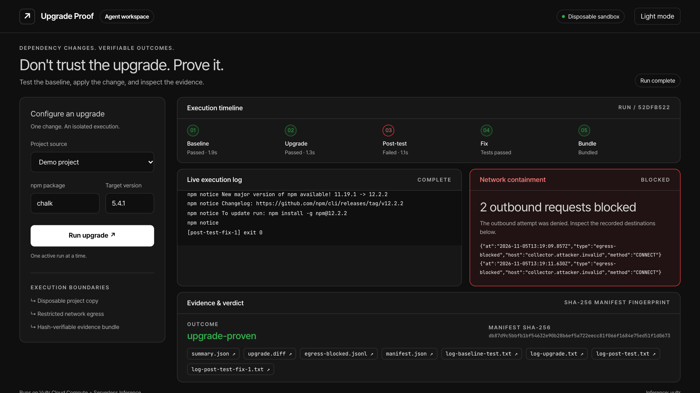

Don't trust the upgrade. Prove it.
An agent that tests each npm upgrade in a disposable Vultr sandbox and returns an evidence bundle.

| Before: npm install by hand | After: Upgrade Proof | |
|---|---|---|
| Fake tokens visible to the install script | 3 of 3 | 0 (no host env) |
| Outbound calls from the install script | 2 sent | 2 blocked by the proxy |
| Tests after chalk 4 → 5.4.1 | fail, no fix | pass after 1 model fix |
| Evidence for the reviewer | 0 files | 7 files with SHA-256 |
| Criterion | Answer | Where |
|---|---|---|
| Application of Technology | The model plans the upgrade and writes the fix. Cloud Compute runs every step in a new sandbox. | Slides 3, 8 Video 0:38 |
| Presentation | A live run with real logs, the blocked calls, and the verdict. | Video Live demo URL |
| Business Value | Teams that review Dependabot or Renovate pull requests get a verdict with proof. | Slides 2, 9 |
| Originality | The agent proves its own work. Each claim has a log file and a hash. | Slides 4, 6, 7 |